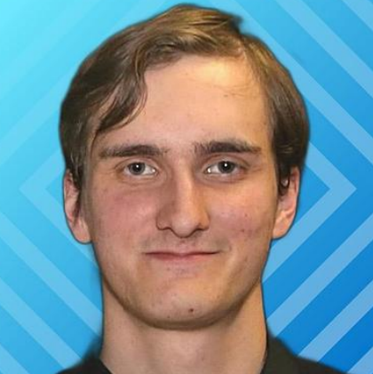

Ph.D. Student, Electrical and Computer Engineering, University of Wisconsin-Madison
Recipient of the ECE Distinguished Graduate Fellowship.
Curriculum Vitae
Ph.D. Student in Electrical and Computer Engineering
University of Wisconsin-Madison

I am a Ph.D. student and graduate researcher at the University of Wisconsin-Madison, working on RF measurements, antenna characterization, and wireless systems. My experience spans rapid near-field antenna testing, reverberation-chamber measurements, computationally efficient propagation models, and resonant RF power converters.
Recipient of the ECE Distinguished Graduate Fellowship.
Thesis: Code and Probe Optimization for Reverberation Chambers. Final grade: 10/10.
Recipient of the NXP Scholarship on mmWave Wireless Technology.
Thesis: Improving Efficiency and Load Range of a Class-Φ2 Inverter Topology for Plasma Generation. Final grade: 9/10. Awarded third prize in the national Stichting 3E - Royal SMIT competition.
Developed modulated-scattering probes, optimized modulation codes, and introduced continuous mechanical stirring for reverberation-chamber measurements, achieving over 16× faster field acquisition.
Developed a Fresnel-integral-based scattering model for rectangular structures with 0.2-1.2-dB median error and over four orders of magnitude speed-up versus full-wave simulation. The model was subsequently implemented in Ericsson's NOVA real-time ray-tracing software.
Designed a 140-GHz joint communication and sensing system from NXP specifications and link-budget targets, including antenna gain, path loss, receiver sensitivity, and SNR. Performed system-level RF analysis, range-Doppler processing, and target detection.
Designed and validated a 13.56-MHz resonant RF power converter to improve efficiency and load tolerance for plasma-generation applications. The work resulted in the patented Load Tolerant Resonant Converter (NL2036981B1 / WO2025168529A1).
Created course-reader content, graded assignments, and developed interactive software for Introduction to Telecommunications and Communications I.
Co-founded a student team developing long-range, solar-powered aircraft for humanitarian purposes. Led electronics development across the Lapyx 1 and Lapyx 2 solar-UAV prototypes, including onboard power, sensing, communications, and flight electronics. More details at teamdaedalus.eu.
RF: Anechoic and reverberation chambers, near-field scanning, antenna arrays, radiation-pattern and efficiency characterization, S-parameters, RF calibration.
Tools: CST, HFSS, ADS, VNA, spectrum analyzer, vector signal generator, oscilloscope, MATLAB, Python, C/C++, LTspice, Fusion.
Wireless: Link budgets, receiver sensitivity, wireless ray tracing, OFDM, range-Doppler processing, 5G NR, Wi-Fi, Bluetooth, UWB, GNSS.
Date of birth: 18/03/2003
Place of birth: Utrecht, Netherlands
Nationality: Dutch and Romanian (dual)